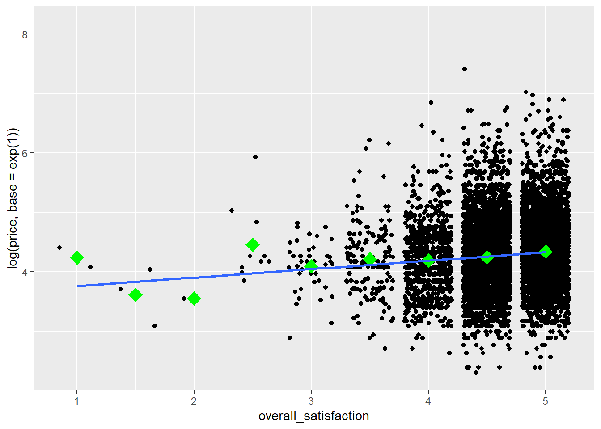
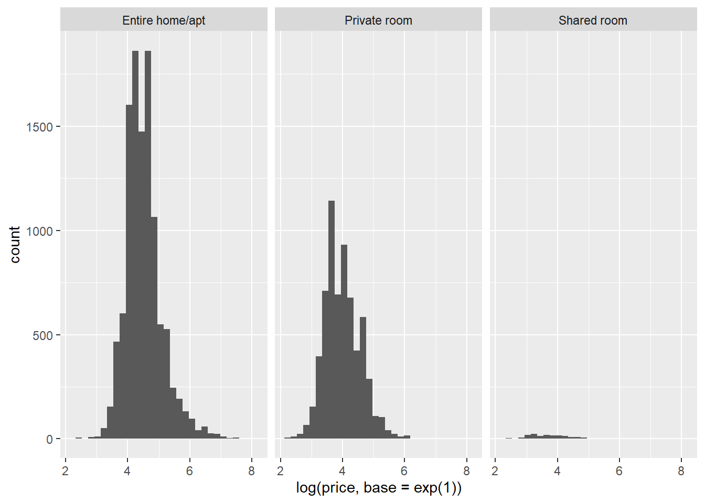

Análise básica de dados: analisando dados secundários
Neste capítulo, analisaremos os dados do Airbnb.com. A introdução tem mais informações sobre esses dados.
Dados
Importação
Você pode baixar o conjunto de dados clicando com o botão direito do mouse nesse link, selecionando “Salvar link como…” (ou algo semelhante) e salvando o arquivo .csv em um diretório no disco rígido. Como mencionado na introdução, é uma boa ideia salvar seu trabalho em um diretório que é automaticamente copiado pelo software de compartilhamento de arquivos. Vamos importar os dados:
library(tidyverse)
#setwd("c:/Dropbox/work/teaching/R/") # Ajusta seu diretorio de trabalho
airbnb <- read.csv(file="http://users.telenet.be/samuelfranssens/tutorial_data/tomslee_airbnb_belgium_1454_2017-07-14.csv") %>%
mutate(room_id = factor(room_id), host_id = factor(host_id)) %>%
select(-country, -survey_id) %>% # dropa country & survey_id, veja a introdução de por que fazemos isso
rename(country = city, city = borough) # renomeia city & borough, veja a introdução de por que fazemos issoNão se esqueça de salvar seu script no diretório de trabalho.
Manipulação
Se você abrir o quadro de dados do airbnb em uma guia do Visualizador, verá que os bathrooms e o minstay são colunas vazias e que o local e last_modified não são muito informativos. Vamos remover estas variáveis:
Agora, dê uma olhada na variável overall_satisfaction:
# use head() para imprimir apenas os primeiros valores de um vetor, para evitar uma lista muito longa
# tail() imprime apenas os últimos valores de um vetor
head(airbnb$overall_satisfaction) ## [1] 4.5 0.0 4.0 4.5 5.0 5.0A segunda classificação é zero. Provavelmente, isso significa que a classificação está faltando, em vez de ser realmente zero. Vamos substituir os valores zero na overall_satisfaction por NA:
airbnb <- airbnb %>%
mutate(overall_satisfaction = replace(overall_satisfaction, overall_satisfaction == 0, NA))
# crie uma variavel "nova" overall_satisfaction que seja igual a overall_satisfaction com valores de NA em que overall_satisfaction seja igual a zero.
# Digamos que desejassemos substituir NA por 0, entao o comando se tornaria: substitute(overall_satisfaction, is.na(overall_satisfaction), 0)
# overall_satisfaction == NA nao funciona
head(airbnb$overall_satisfaction)## [1] 4.5 NA 4.0 4.5 5.0 5.0Mesclando datasets
Posteriormente, testaremos se o preço está relacionado a determinadas características dos tipos de quartos. As características potencialmente interessantes são: room_type, city, reviews, overall_satisfaction, etc. Para torná-lo ainda mais interessante, podemos aumentar os dados, por exemplo, com dados disponíveis publicamente nas cidades. Reuni os tamanhos de população das cidades belgas mais populosas deste site. Faça o download desses dados (aqui) e importe-os para o R:
#population <- read_excel("population.xlsx","data")
library(readxl)
url<-"http://users.telenet.be/samuelfranssens/tutorial_data/population.xlsx"
population <- tempfile()
download.file(url, population, mode="wb")
population<-read_excel(path = population, sheet = 1)
population## # A tibble: 183 x 2
## place population
## <chr> <dbl>
## 1 Brussels 1019022
## 2 Antwerpen 459805
## 3 Gent 231493
## 4 Charleroi 200132
## 5 Liège 182597
## 6 Brugge 116709
## 7 Namur 106284
## 8 Leuven 92892
## 9 Mons 91277
## 10 Aalst 77534
## # ... with 173 more rowsAgora, queremos vincular esses dados ao nosso quadro de dados do airbnb. Isso é muito fácil no R (mas é muito difícil, por exemplo, no Excel):
airbnb.merged <- left_join(airbnb, population, by = c("city" = "place"))
# o primeiro argumento eh o conjunto de dados que queremos aumentar
# o segundo argumento eh onde encontramos os dados para aumentar o primeiro conjunto de dados com
# o terceiro argumento sao as variaveis que usamos para vincular um conjunto de dados ao outro (cidade eh uma variavel no airbnb, local eh uma variavel na populacao) Confira as colunas mais relevantes do quadro de dados airbnb.merged:
## room_id city price population
## 1 5141135 Gent 59 231493
## 2 13128333 Brussel 53 NA
## 3 8298885 Brussel 46 NA
## 4 13822088 Oostende 56 NA
## 5 18324301 Brussel 47 NA
## 6 12664969 Brussel 60 NA
## 7 15452889 Gent 41 231493
## 8 3911778 Brussel 36 NA
## 9 14929414 Verviers 18 52824
## 10 8497852 Brussel 38 NA
## 11 19372053 Tournai 14 67721
## 12 19855549 Brussel 37 NA
## 13 6772358 Gent 28 231493
## 14 13852832 Arlon 177 26179
## 15 11581251 Kortrijk 147 73879
## 16 3645177 Antwerpen 177 459805
## 17 12032748 Verviers 129 52824
## 18 12034268 Verviers 140 52824
## 19 427739 Gent 141 231493
## 20 14194882 Brussel 136 NA
## 21 19298546 Leuven 132 92892
## 22 12133666 Brugge 117 116709
## 23 4419833 Ath 106 26681
## 24 15573750 Leuven 116 92892
## 25 1334575 Tongeren 106 29816
## 26 5080373 Leuven 117 92892
## 27 18792208 Brussel 95 NA
## 28 12953046 Turnhout 95 39654
## 29 19240451 Brussel 89 NA
## 30 18127715 Brussel 90 NA
## 31 2819790 Antwerpen 99 459805
## 32 13359912 Brugge 95 116709
## 33 19011766 Dinant 89 NA
## 34 18400286 Nivelles 100 24149
## 35 6618531 Tongeren 79 29816
## 36 5295379 Brussel 70 NA
## 37 305254 Brussel 65 NA
## 38 17101078 Brussel 68 NA
## 39 6922628 Antwerpen 71 459805
## 40 6071151 Leuven 82 92892
## 41 776659 Verviers 70 52824
## 42 7264367 Antwerpen 71 459805
## 43 9872230 Antwerpen 71 459805
## 44 9374612 Brussel 82 NA
## 45 16487370 Mechelen 64 77530
## 46 14904339 Namur 64 106284
## 47 10134272 Brussel 82 NA
## 48 5369431 Brussel 47 NA
## 49 14269765 Brussel 46 NA
## 50 9428708 Liège 47 NA
## 51 18412932 Brussel 47 NA
## 52 15867878 Oostende 59 NA
## 53 8669953 Halle-Vilvoorde 53 NA
## 54 6137734 Mechelen 59 77530
## 55 13917474 Liège 53 NA
## 56 15325813 Gent 42 231493
## 57 18855915 Virton 53 NA
## 58 19257027 Turnhout 47 39654
## 59 11984885 Brussel 47 NA
## 60 7982955 Brussel 53 NA
## 61 2289786 Antwerpen 41 459805
## 62 17822696 Verviers 44 52824
## 63 19644516 Mechelen 58 77530
## 64 2403914 Antwerpen 47 459805
## 65 3503685 Brussel 53 NA
## 66 1334717 Tongeren 47 29816
## 67 7479719 Mechelen 41 77530
## 68 5609860 Nivelles 44 24149
## 69 17306887 Mons 43 91277
## 70 8422305 Oostende 41 NA
## 71 19539445 Brussel 59 NA
## 72 11683593 Brussel 47 NA
## 73 19267790 Brussel 47 NA
## 74 13870594 Antwerpen 53 459805
## 75 17991836 Mechelen 59 77530
## 76 15563196 Brussel 30 NA
## 77 15138720 Brussel 34 NA
## 78 14481075 Brussel 18 NA
## 79 15453651 Brussel 30 NA
## 80 6504321 Brussel 30 NA
## 81 8209254 Halle-Vilvoorde 41 NA
## 82 16453691 Verviers 11 52824
## 83 16307457 Tongeren 35 29816
## 84 16626065 Brussel 35 NA
## 85 14264551 Brussel 26 NA
## 86 13879762 Soignies 22 24869
## 87 12424835 Brussel 40 NA
## 88 12032916 Gent 23 231493
## 89 12101635 Leuven 39 92892
## 90 10625332 Brussel 30 NA
## 91 12424357 Brussel 40 NA
## 92 3710876 Antwerpen 35 459805
## 93 10128019 Antwerpen 31 459805
## 94 7186272 Brussel 24 NA
## 95 19242190 Aalst 11 77534
## 96 17128648 Verviers 18 52824
## 97 10079396 Brussel 26 NA
## 98 16775210 Brussel 23 NA
## 99 19794790 Brussel 23 NA
## 100 15459733 Brussel 19 NA
## 101 2533747 Brussel 39 NA
## 102 16486024 Brussel 19 NA
## 103 19082765 Brussel 19 NA
## 104 13838407 Brussel 26 NA
## 105 15459583 Brussel 19 NA
## 106 18365341 Oudenaarde 24 27935
## 107 18303344 Brussel 22 NA
## 108 13856670 Brussel 24 NA
## 109 13846466 Brussel 30 NA
## 110 5208612 Brussel 125 NA
## 111 5867005 Brussel 136 NA
## 112 16234918 Brussel 133 NA
## 113 627461 Brussel 115 NA
## 114 4029308 Arlon 106 26179
## 115 4964759 Brussel 105 NA
## 116 19886292 Halle-Vilvoorde 124 NA
## 117 15651530 Brussel 89 NA
## 118 12282191 Veurne 82 NA
## 119 9482000 Oostende 100 NA
## 120 18669717 Arlon 65 26179
## 121 6618877 Brussel 70 NA
## 122 18848502 Brussel 76 NA
## 123 7508044 Brussel 59 NA
## 124 19868373 Gent 62 231493
## 125 13384698 Brussel 59 NA
## 126 9044335 Brussel 47 NA
## 127 14314490 Brussel 59 NA
## 128 13061326 Brussel 49 NA
## 129 13052188 Brussel 59 NA
## 130 7997565 Brussel 59 NA
## 131 17116772 Brussel 49 NA
## 132 7799636 Brussel 1120 NA
## 133 8288800 Namur 1061 106284
## 134 14400013 Neufchâteau 872 NA
## 135 17081519 Waremme 866 NA
## 136 5634567 Liège 825 NA
## 137 7805577 Verviers 884 52824
## 138 7165868 Brussel 1002 NA
## 139 10274258 Verviers 1002 52824
## 140 8122542 Neufchâteau 814 NA
## 141 17862238 Verviers 630 52824
## 142 8638355 Brugge 530 116709
## 143 14361938 Verviers 708 52824
## 144 6584668 Antwerpen 531 459805
## 145 12659483 Verviers 530 52824
## 146 1133543 Dinant 589 NA
## 147 9289185 Brussel 708 NA
## 148 5268112 Kortrijk 530 73879
## 149 16511250 Verviers 708 52824
## 150 18055247 Antwerpen 589 459805
## 151 4125959 Verviers 613 52824
## 152 19832075 Antwerpen 589 459805
## 153 9895516 Verviers 589 52824
## 154 11311977 Oudenaarde 588 27935
## 155 19767542 Antwerpen 589 459805
## 156 2001980 Ieper 648 35089
## 157 19544556 Mechelen 565 77530
## 158 17094009 Namur 648 106284
## 159 6266731 Marche-en-Famenne 342 16856
## 160 6306984 Marche-en-Famenne 459 16856
## 161 1873941 Namur 353 106284
## 162 10505318 Brugge 353 116709
## 163 3218980 Leuven 324 92892
## 164 6622480 Brugge 383 116709
## 165 14436744 Verviers 413 52824
## 166 4643394 Dinant 388 NA
## 167 8305745 Tongeren 324 29816
## 168 14563219 Brugge 330 116709
## 169 8605552 Antwerpen 413 459805
## 170 9768597 Brugge 413 116709
## 171 10982966 Dinant 401 NA
## 172 13890965 Sint-Niklaas 483 69010
## 173 9485806 Neufchâteau 211 NA
## 174 14139756 Dinant 260 NA
## 175 8677551 Neufchâteau 227 NA
## 176 5062155 Marche-en-Famenne 272 16856
## 177 7631501 Neufchâteau 212 NA
## 178 11965718 Ieper 236 35089
## 179 2873179 Brussel 271 NA
## 180 8081545 Brussel 236 NA
## 181 2200868 Brugge 235 116709
## 182 18670282 Brugge 236 116709
## 183 6431470 Brugge 218 116709
## 184 9856241 Brugge 260 116709
## 185 3320199 Brussel 236 NA
## 186 9177354 Brussel 224 NA
## 187 7574537 Marche-en-Famenne 247 16856
## 188 4053396 Brussel 76 NA
## 189 10790061 Antwerpen 68 459805
## 190 9871590 Antwerpen 78 459805
## 191 3879691 Brugge 76 116709
## 192 18496589 Antwerpen 77 459805
## 193 12567023 Brussel 265 NA
## 194 5158233 Dinant 236 NA
## 195 10045822 Brugge 236 116709
## 196 7570229 Marche-en-Famenne 212 16856
## 197 19875796 Antwerpen 271 459805
## 198 19799071 Brussel 212 NA
## 199 14213309 Antwerpen 230 459805
## 200 19880328 Halle-Vilvoorde 265 NA
## 201 2643209 Brussel 201 NA
## 202 19420094 Veurne 201 NA
## 203 19357024 Veurne 188 NA
## 204 5456149 Oostende 201 NA
## 205 14027383 Liège 188 NA
## 206 1457964 Brussel 188 NA
## 207 8177441 Verviers 203 52824
## 208 6653065 Nivelles 206 24149
## 209 15322863 Gent 141 231493
## 210 14414584 Veurne 130 NA
## 211 19869653 Moeskroen 141 NA
## 212 14313831 Brugge 133 116709
## 213 6420828 Verviers 140 52824
## 214 14663508 Verviers 141 52824
## 215 4234316 Brugge 141 116709
## 216 11753766 Dinant 136 NA
## 217 19841063 Antwerpen 136 459805
## 218 5752406 Neufchâteau 117 NA
## 219 7225096 Liège 116 NA
## 220 4460348 Arlon 106 26179
## 221 18176029 Arlon 106 26179
## 222 4595400 Gent 111 231493
## 223 9527419 Veurne 123 NA
## 224 2855704 Gent 106 231493
## 225 9438769 Liège 112 NA
## 226 19586893 Verviers 116 52824
## 227 19873275 Soignies 106 24869
## 228 19867106 Brussel 117 NA
## 229 9687262 Brussel 116 NA
## 230 19887471 Brussel 106 NA
## 231 18958135 Maaseik 112 23684
## 232 19882564 Brussel 117 NA
## 233 16485966 Brussel 19 NA
## 234 15513008 Brussel 19 NA
## 235 19101520 Brussel 18 NA
## 236 15542284 Brussel 19 NA
## 237 16688487 Halle-Vilvoorde 30 NA
## 238 18985088 Brussel 19 NA
## 239 8906556 Brussel 26 NA
## 240 11278553 Virton 30 NA
## 241 5866814 Namur 27 106284
## 242 19782106 Brussel 24 NA
## 243 10571855 Brussel 18 NA
## 244 6894473 Brugge 28 116709
## 245 19423405 Brussel 24 NA
## 246 2820108 Antwerpen 35 459805
## 247 5813507 Leuven 28 92892
## 248 15176439 Liège 24 NA
## 249 19685432 Brussel 30 NA
## 250 19082608 Brussel 19 NA
## [ reached 'max' / getOption("max.print") -- omitted 17401 rows ]Vemos que há uma population de colunas em nosso conjunto de dados airbnb.merged. Você também pode ver isso no painel Ambiente: airbnb.merged tem uma variável a mais que airbnb (mas o mesmo número de observações).
Faltam dados para Bruxelas, no entanto. Isso ocorre porque Bruxelas está escrito em holandês no conjunto de dados airbnb, mas em inglês no conjunto de dados da population.
Vamos substituir Bruxelas por Bruxelas no conjunto de dados da population (e também alterar a ortografia de duas outras cidades) e vincular os dados novamente:
population <- population %>%
mutate(place = replace(place, place == "Brussels", "Brussel"),
place = replace(place, place == "Ostend", "Oostende"),
place = replace(place, place == "Mouscron", "Moeskroen"))
airbnb.merged <- left_join(airbnb, population, by = c("city" = "place"))
airbnb.merged %>%
select(room_id, city, price, population)## room_id city price population
## 1 5141135 Gent 59 231493
## 2 13128333 Brussel 53 1019022
## 3 8298885 Brussel 46 1019022
## 4 13822088 Oostende 56 69011
## 5 18324301 Brussel 47 1019022
## 6 12664969 Brussel 60 1019022
## 7 15452889 Gent 41 231493
## 8 3911778 Brussel 36 1019022
## 9 14929414 Verviers 18 52824
## 10 8497852 Brussel 38 1019022
## 11 19372053 Tournai 14 67721
## 12 19855549 Brussel 37 1019022
## 13 6772358 Gent 28 231493
## 14 13852832 Arlon 177 26179
## 15 11581251 Kortrijk 147 73879
## 16 3645177 Antwerpen 177 459805
## 17 12032748 Verviers 129 52824
## 18 12034268 Verviers 140 52824
## 19 427739 Gent 141 231493
## 20 14194882 Brussel 136 1019022
## 21 19298546 Leuven 132 92892
## 22 12133666 Brugge 117 116709
## 23 4419833 Ath 106 26681
## 24 15573750 Leuven 116 92892
## 25 1334575 Tongeren 106 29816
## 26 5080373 Leuven 117 92892
## 27 18792208 Brussel 95 1019022
## 28 12953046 Turnhout 95 39654
## 29 19240451 Brussel 89 1019022
## 30 18127715 Brussel 90 1019022
## 31 2819790 Antwerpen 99 459805
## 32 13359912 Brugge 95 116709
## 33 19011766 Dinant 89 NA
## 34 18400286 Nivelles 100 24149
## 35 6618531 Tongeren 79 29816
## 36 5295379 Brussel 70 1019022
## 37 305254 Brussel 65 1019022
## 38 17101078 Brussel 68 1019022
## 39 6922628 Antwerpen 71 459805
## 40 6071151 Leuven 82 92892
## 41 776659 Verviers 70 52824
## 42 7264367 Antwerpen 71 459805
## 43 9872230 Antwerpen 71 459805
## 44 9374612 Brussel 82 1019022
## 45 16487370 Mechelen 64 77530
## 46 14904339 Namur 64 106284
## 47 10134272 Brussel 82 1019022
## 48 5369431 Brussel 47 1019022
## 49 14269765 Brussel 46 1019022
## 50 9428708 Liège 47 NA
## 51 18412932 Brussel 47 1019022
## 52 15867878 Oostende 59 69011
## 53 8669953 Halle-Vilvoorde 53 NA
## 54 6137734 Mechelen 59 77530
## 55 13917474 Liège 53 NA
## 56 15325813 Gent 42 231493
## 57 18855915 Virton 53 NA
## 58 19257027 Turnhout 47 39654
## 59 11984885 Brussel 47 1019022
## 60 7982955 Brussel 53 1019022
## 61 2289786 Antwerpen 41 459805
## 62 17822696 Verviers 44 52824
## 63 19644516 Mechelen 58 77530
## 64 2403914 Antwerpen 47 459805
## 65 3503685 Brussel 53 1019022
## 66 1334717 Tongeren 47 29816
## 67 7479719 Mechelen 41 77530
## 68 5609860 Nivelles 44 24149
## 69 17306887 Mons 43 91277
## 70 8422305 Oostende 41 69011
## 71 19539445 Brussel 59 1019022
## 72 11683593 Brussel 47 1019022
## 73 19267790 Brussel 47 1019022
## 74 13870594 Antwerpen 53 459805
## 75 17991836 Mechelen 59 77530
## 76 15563196 Brussel 30 1019022
## 77 15138720 Brussel 34 1019022
## 78 14481075 Brussel 18 1019022
## 79 15453651 Brussel 30 1019022
## 80 6504321 Brussel 30 1019022
## 81 8209254 Halle-Vilvoorde 41 NA
## 82 16453691 Verviers 11 52824
## 83 16307457 Tongeren 35 29816
## 84 16626065 Brussel 35 1019022
## 85 14264551 Brussel 26 1019022
## 86 13879762 Soignies 22 24869
## 87 12424835 Brussel 40 1019022
## 88 12032916 Gent 23 231493
## 89 12101635 Leuven 39 92892
## 90 10625332 Brussel 30 1019022
## 91 12424357 Brussel 40 1019022
## 92 3710876 Antwerpen 35 459805
## 93 10128019 Antwerpen 31 459805
## 94 7186272 Brussel 24 1019022
## 95 19242190 Aalst 11 77534
## 96 17128648 Verviers 18 52824
## 97 10079396 Brussel 26 1019022
## 98 16775210 Brussel 23 1019022
## 99 19794790 Brussel 23 1019022
## 100 15459733 Brussel 19 1019022
## 101 2533747 Brussel 39 1019022
## 102 16486024 Brussel 19 1019022
## 103 19082765 Brussel 19 1019022
## 104 13838407 Brussel 26 1019022
## 105 15459583 Brussel 19 1019022
## 106 18365341 Oudenaarde 24 27935
## 107 18303344 Brussel 22 1019022
## 108 13856670 Brussel 24 1019022
## 109 13846466 Brussel 30 1019022
## 110 5208612 Brussel 125 1019022
## 111 5867005 Brussel 136 1019022
## 112 16234918 Brussel 133 1019022
## 113 627461 Brussel 115 1019022
## 114 4029308 Arlon 106 26179
## 115 4964759 Brussel 105 1019022
## 116 19886292 Halle-Vilvoorde 124 NA
## 117 15651530 Brussel 89 1019022
## 118 12282191 Veurne 82 NA
## 119 9482000 Oostende 100 69011
## 120 18669717 Arlon 65 26179
## 121 6618877 Brussel 70 1019022
## 122 18848502 Brussel 76 1019022
## 123 7508044 Brussel 59 1019022
## 124 19868373 Gent 62 231493
## 125 13384698 Brussel 59 1019022
## 126 9044335 Brussel 47 1019022
## 127 14314490 Brussel 59 1019022
## 128 13061326 Brussel 49 1019022
## 129 13052188 Brussel 59 1019022
## 130 7997565 Brussel 59 1019022
## 131 17116772 Brussel 49 1019022
## 132 7799636 Brussel 1120 1019022
## 133 8288800 Namur 1061 106284
## 134 14400013 Neufchâteau 872 NA
## 135 17081519 Waremme 866 NA
## 136 5634567 Liège 825 NA
## 137 7805577 Verviers 884 52824
## 138 7165868 Brussel 1002 1019022
## 139 10274258 Verviers 1002 52824
## 140 8122542 Neufchâteau 814 NA
## 141 17862238 Verviers 630 52824
## 142 8638355 Brugge 530 116709
## 143 14361938 Verviers 708 52824
## 144 6584668 Antwerpen 531 459805
## 145 12659483 Verviers 530 52824
## 146 1133543 Dinant 589 NA
## 147 9289185 Brussel 708 1019022
## 148 5268112 Kortrijk 530 73879
## 149 16511250 Verviers 708 52824
## 150 18055247 Antwerpen 589 459805
## 151 4125959 Verviers 613 52824
## 152 19832075 Antwerpen 589 459805
## 153 9895516 Verviers 589 52824
## 154 11311977 Oudenaarde 588 27935
## 155 19767542 Antwerpen 589 459805
## 156 2001980 Ieper 648 35089
## 157 19544556 Mechelen 565 77530
## 158 17094009 Namur 648 106284
## 159 6266731 Marche-en-Famenne 342 16856
## 160 6306984 Marche-en-Famenne 459 16856
## 161 1873941 Namur 353 106284
## 162 10505318 Brugge 353 116709
## 163 3218980 Leuven 324 92892
## 164 6622480 Brugge 383 116709
## 165 14436744 Verviers 413 52824
## 166 4643394 Dinant 388 NA
## 167 8305745 Tongeren 324 29816
## 168 14563219 Brugge 330 116709
## 169 8605552 Antwerpen 413 459805
## 170 9768597 Brugge 413 116709
## 171 10982966 Dinant 401 NA
## 172 13890965 Sint-Niklaas 483 69010
## 173 9485806 Neufchâteau 211 NA
## 174 14139756 Dinant 260 NA
## 175 8677551 Neufchâteau 227 NA
## 176 5062155 Marche-en-Famenne 272 16856
## 177 7631501 Neufchâteau 212 NA
## 178 11965718 Ieper 236 35089
## 179 2873179 Brussel 271 1019022
## 180 8081545 Brussel 236 1019022
## 181 2200868 Brugge 235 116709
## 182 18670282 Brugge 236 116709
## 183 6431470 Brugge 218 116709
## 184 9856241 Brugge 260 116709
## 185 3320199 Brussel 236 1019022
## 186 9177354 Brussel 224 1019022
## 187 7574537 Marche-en-Famenne 247 16856
## 188 4053396 Brussel 76 1019022
## 189 10790061 Antwerpen 68 459805
## 190 9871590 Antwerpen 78 459805
## 191 3879691 Brugge 76 116709
## 192 18496589 Antwerpen 77 459805
## 193 12567023 Brussel 265 1019022
## 194 5158233 Dinant 236 NA
## 195 10045822 Brugge 236 116709
## 196 7570229 Marche-en-Famenne 212 16856
## 197 19875796 Antwerpen 271 459805
## 198 19799071 Brussel 212 1019022
## 199 14213309 Antwerpen 230 459805
## 200 19880328 Halle-Vilvoorde 265 NA
## 201 2643209 Brussel 201 1019022
## 202 19420094 Veurne 201 NA
## 203 19357024 Veurne 188 NA
## 204 5456149 Oostende 201 69011
## 205 14027383 Liège 188 NA
## 206 1457964 Brussel 188 1019022
## 207 8177441 Verviers 203 52824
## 208 6653065 Nivelles 206 24149
## 209 15322863 Gent 141 231493
## 210 14414584 Veurne 130 NA
## 211 19869653 Moeskroen 141 52069
## 212 14313831 Brugge 133 116709
## 213 6420828 Verviers 140 52824
## 214 14663508 Verviers 141 52824
## 215 4234316 Brugge 141 116709
## 216 11753766 Dinant 136 NA
## 217 19841063 Antwerpen 136 459805
## 218 5752406 Neufchâteau 117 NA
## 219 7225096 Liège 116 NA
## 220 4460348 Arlon 106 26179
## 221 18176029 Arlon 106 26179
## 222 4595400 Gent 111 231493
## 223 9527419 Veurne 123 NA
## 224 2855704 Gent 106 231493
## 225 9438769 Liège 112 NA
## 226 19586893 Verviers 116 52824
## 227 19873275 Soignies 106 24869
## 228 19867106 Brussel 117 1019022
## 229 9687262 Brussel 116 1019022
## 230 19887471 Brussel 106 1019022
## 231 18958135 Maaseik 112 23684
## 232 19882564 Brussel 117 1019022
## 233 16485966 Brussel 19 1019022
## 234 15513008 Brussel 19 1019022
## 235 19101520 Brussel 18 1019022
## 236 15542284 Brussel 19 1019022
## 237 16688487 Halle-Vilvoorde 30 NA
## 238 18985088 Brussel 19 1019022
## 239 8906556 Brussel 26 1019022
## 240 11278553 Virton 30 NA
## 241 5866814 Namur 27 106284
## 242 19782106 Brussel 24 1019022
## 243 10571855 Brussel 18 1019022
## 244 6894473 Brugge 28 116709
## 245 19423405 Brussel 24 1019022
## 246 2820108 Antwerpen 35 459805
## 247 5813507 Leuven 28 92892
## 248 15176439 Liège 24 NA
## 249 19685432 Brussel 30 1019022
## 250 19082608 Brussel 19 1019022
## [ reached 'max' / getOption("max.print") -- omitted 17401 rows ]Recapitulando: importação e manipulação
Aqui está o que fizemos até agora, em uma sequência ordenada de operações pipe (faça o download dos dados aqui e aqui:
#library(tidyverse)
#setwd("c:/Dropbox/work/teaching/R") # Configura seu diretorio de trabalho
#airbnb <- read_csv("tomslee_airbnb_belgium_1454_2017-07-14.csv") %>%
#mutate(room_id = factor(room_id), host_id = factor(host_id),
# overall_satisfaction = replace(overall_satisfaction, overall_satisfaction == 0, NA)) %>%
# select(-country, -survey_id,- bathrooms, -minstay, -location, -last_modified) %>%
# rename(country = city, city = borough)
#population <- read_excel("population.xlsx","data") %>%
#mutate(place = replace(place, place == "Brussels", "Brussel"),
# place = replace(place, place == "Ostend", "Oostende"),
# place = replace(place, place == "Mouscron", "Moeskroen"))
#airbnb <- left_join(airbnb, population, by = c("city" = "place"))Amostras independentes: teste \(t\)
Digamos que queremos testar se os preços diferem entre cidades grandes e pequenas. Para fazer isso, precisamos de uma variável que indique se um Airbnb está em uma cidade grande ou pequena. Na Bélgica, consideramos cidades com uma população de pelo menos cem mil como grande:
airbnb <- airbnb.merged %>%
mutate(large = population > 100000,
size = factor(large, labels = c("small","large")))
# Nos poderiamos tambem ter escrito: mutate(size = factor(population > 100000, labels = c("small","large)))
# observando a variavel populacao
head(airbnb$population)## [1] 231493 1019022 1019022 69011 1019022 1019022## [1] TRUE TRUE TRUE FALSE TRUE TRUE## [1] large large large small large large
## Levels: small largeNo script acima, primeiro criamos uma variável lógica (esse é outro tipo de variável; discutimos outras aqui). Chamamos essa variável de grande e é TRUE quando a população é maior que 100000 e FALSE, se não. Depois, criamos um novo tamanho de variável que é a fatoração de grande porte. Observe que adicionamos outro argumento à função factor, ou seja, labels, para fornecer os valores large de nomes mais intuitivos. FALSE vem em primeiro lugar no alfabeto e obtém o primeiro rótulo pequeno, TRUE fica em segundo lugar no alfabeto e obtém o segundo rótulo grande.
Para saber quais cidades são grandes e quais são pequenas, podemos solicitar frequências de combinações de tamanho (grande versus pequeno) e city (a própria cidade). Aprendemos como fazer isso no capítulo introdutório (consulte as tabelas de frequência e as estatísticas descritivas):
airbnb %>%
group_by(size, city) %>%
summarise(count = n(),
population = mean(population)) %>% # Cidades formam os grupos. Portanto, a populacao media de um grupo = a media de observacoes com a mesma populacao, porque elas vem da mesma cidade = a populacao da cidade
arrange(desc(size), desc(population)) %>% # maior cidade no topo
print (n = Inf) # mostra a distribuicao completa das frequencias## `summarise()` regrouping output by 'size' (override with `.groups` argument)## # A tibble: 43 x 4
## # Groups: size [3]
## size city count population
## <fct> <chr> <int> <dbl>
## 1 large Brussel 6715 1019022
## 2 large Antwerpen 1610 459805
## 3 large Gent 1206 231493
## 4 large Charleroi 118 200132
## 5 large Brugge 1094 116709
## 6 large Namur 286 106284
## 7 small Leuven 434 92892
## 8 small Mons 129 91277
## 9 small Aalst 74 77534
## 10 small Mechelen 190 77530
## 11 small Kortrijk 107 73879
## 12 small Hasselt 151 69222
## 13 small Oostende 527 69011
## 14 small Sint-Niklaas 52 69010
## 15 small Tournai 97 67721
## 16 small Roeselare 41 56016
## 17 small Verviers 631 52824
## 18 small Moeskroen 28 52069
## 19 small Dendermonde 45 43055
## 20 small Turnhout 130 39654
## 21 small Ieper 143 35089
## 22 small Tongeren 173 29816
## 23 small Oudenaarde 110 27935
## 24 small Ath 47 26681
## 25 small Arlon 46 26179
## 26 small Soignies 58 24869
## 27 small Nivelles 505 24149
## 28 small Maaseik 93 23684
## 29 small Huy 99 19973
## 30 small Tielt 24 19299
## 31 small Eeklo 43 19116
## 32 small Marche-en-Famenne 266 16856
## 33 small Diksmuide 27 15515
## 34 <NA> Bastogne 145 NA
## 35 <NA> Dinant 286 NA
## 36 <NA> Halle-Vilvoorde 471 NA
## 37 <NA> Liège 667 NA
## 38 <NA> Neufchâteau 160 NA
## 39 <NA> Philippeville 85 NA
## 40 <NA> Thuin 81 NA
## 41 <NA> Veurne 350 NA
## 42 <NA> Virton 56 NA
## 43 <NA> Waremme 51 NAVemos que algumas cidades têm um valor de NA para tamanho. Isso ocorre porque não temos população para essas cidades (e, portanto, também não sabemos se é uma cidade grande ou pequena). Vamos filtrar essas observações e verificar as médias e os desvios padrão de preço, dependendo do tamanho da cidade:
airbnb.cities <- airbnb %>%
filter(!is.na(population))
# Filtre as observacoes para as quais nao temos a populacao.
# O ponto de exclamacao deve ser lido como NAO. Entao, queremos manter as observacoes para as quais a populacao NAO eh NA.
# Visite https://r4ds.had.co.nz/transform.html#filter-rows-with-filter para conhecer mais sobre operadores logicos (veja secao 5.2.2).
airbnb.cities %>%
group_by(size) %>%
summarise(mean_price = mean(price),
sd_price = sd(price),
count = n())## `summarise()` ungrouping output (override with `.groups` argument)## # A tibble: 2 x 4
## size mean_price sd_price count
## <fct> <dbl> <dbl> <int>
## 1 small 110. 122. 4270
## 2 large 85.8 82.9 11029Vemos que os preços são mais altos nas pequenas e nas grandes cidades, mas queremos saber se essa diferença é significativa. Um teste t de amostras independentes pode fornecer a resposta (as listagens nas grandes cidades e as listagens nas pequenas cidades são as amostras independentes), mas precisamos verificar primeiro uma suposição: as variâncias das duas amostras independentes são iguais?
#install.packages(car) # Para o teste de igualdade de variancias precisaremos do pacote car.
library(car)
# Teste de Levene para variancias iguais
# Baixo valor p significa que as variancias nao sao iguais.
# Primeiro argumento = variavel dependente continua, segundo argumento = variavel independente categorica.
leveneTest(airbnb.cities$price, airbnb.cities$size) ## Levene's Test for Homogeneity of Variance (center = median)
## Df F value Pr(>F)
## group 1 134.45 < 2.2e-16 ***
## 15297
## ---
## Signif. codes: 0 '***' 0.001 '**' 0.01 '*' 0.05 '.' 0.1 ' ' 1A hipótese nula de variâncias iguais é rejeitada (\(p <0,001\)), portanto, devemos continuar com um teste \(t\) que pressupõe variâncias desiguais:
# Teste se os preços médios das cidades grandes e pequenas são diferentes.
# Indique se o teste deve assumir variações iguais ou não (defina var.equal = TRUE para um teste que assume variações iguais).
t.test(airbnb.cities$price ~ airbnb.cities$size, var.equal = FALSE)##
## Welch Two Sample t-test
##
## data: airbnb.cities$price by airbnb.cities$size
## t = 12.125, df = 5868.3, p-value < 2.2e-16
## alternative hypothesis: true difference in means is not equal to 0
## 95 percent confidence interval:
## 20.55103 28.47774
## sample estimates:
## mean in group small mean in group large
## 110.31265 85.79826Você pode relatar o seguinte: “As cidades grandes (M = 85,42, DP = 82,46) tinham um preço mais baixo (\(t\) (5762,79) = 12,376, p $<$0,001, variação desigual assumida) do que as cidades pequenas (M = 110,31, DP = 121,63).”
ANOVA univariada
Quando sua variável independente (categórica) possui apenas dois grupos, é possível testar se as médias da variável dependente (contínua) são significativamente diferentes ou não com um teste \(t\). Quando sua variável independente possui mais de dois grupos, você pode testar se as médias são diferentes com uma ANOVA.
Por exemplo, digamos que queremos testar se há uma diferença significativa entre os preços médios de casas e apartamentos inteiros, salas privadas e quartos compartilhados. Vamos dar uma olhada nos meios por tipo de quarto:
airbnb.summary <- airbnb %>%
group_by(room_type) %>%
summarise(count = n(), # obtenha as frequencias dos diferentes tipos de quartos
mean_price = mean(price), # o preco medio por tipo de quarto
sd_price = sd(price)) # e o desvio padrao do preco por tipo de quarto## `summarise()` ungrouping output (override with `.groups` argument)## # A tibble: 3 x 4
## room_type count mean_price sd_price
## <chr> <int> <dbl> <dbl>
## 1 Entire home/apt 11082 113. 118.
## 2 Private room 6416 64.3 46.5
## 3 Shared room 153 49.6 33.9Também podemos traçar esses meios em um gráfico de barras:
# Ao criar um grafico de barras, o conjunto de dados que serve como entrada para o ggplot eh o resumo com os meios, nao o conjunto de dados completo.
# (Eh por isso que salvamos o resumo acima em um objeto airbnb.summary)
ggplot(data = airbnb.summary, mapping = aes(x = room_type, y = mean_price)) +
geom_bar(stat = "identity", position = "dodge")Não é de surpreender que casas ou apartamentos inteiros tenham preços mais altos do que quartos particulares, que, por sua vez, têm preços mais altos que quartos compartilhados. Também vemos que há quase o dobro de casas e apartamentos inteiros do que quartos privativos disponíveis e quase não há quartos compartilhados disponíveis. Além disso, o desvio padrão é muito mais alto na categoria de casas ou apartamentos inteiros do que nas categorias de quarto particular ou compartilhado.
Uma ANOVA pode testar se há diferenças significativas nos preços médios por tipo de quarto. Porém, antes de executar uma ANOVA, precisamos verificar se as premissas da ANOVA são atendidas.
Suposição de normalidade de resíduos
A primeira suposição é que a variável dependente (price) é normalmente distribuída em cada nível da variável independente (room_type). Primeiro, vamos inspecionar visualmente se essa suposição será válida:
# Ao criar um histograma, o conjunto de dados que serve como entrada para o ggplot eh o conjunto de dados completo, nao o resumo com os meios
ggplot(data = airbnb, mapping = aes(x = price)) + # Queremos price no eixo x.
facet_wrap(~ room_type) + # Queremos que isso seja dividido por room_type.
#facet_wrap garantira que o ggplot crie paineis diferentes no seu gráfico.
geom_histogram() # geom_histogram garante que as frequencias dos valores no eixo X sejam plotadas.## `stat_bin()` using `bins = 30`. Pick better value with `binwidth`.
Vemos que há inclinação correta para cada tipo de quarto. Também podemos testar formalmente, dentro de cada tipo de quarto, se as distribuições são normais com o teste Shapiro-Wilk. Por exemplo, para as quartos compartilhados:
airbnb.shared <- airbnb %>%
filter(room_type == "Shared room") # reter dados apenas das salas compartilhadas
shapiro.test(airbnb.shared$price)##
## Shapiro-Wilk normality test
##
## data: airbnb.shared$price
## W = 0.83948, p-value = 1.181e-11O valor-\(p\) deste teste é extremamente pequeno, portanto a hipótese nula de que a amostra provém de uma distribuição normal deve ser rejeitada. Se tentarmos o teste Shapiro-Wilk para os quartos privados:
airbnb.private <- airbnb %>%
filter(room_type == "Private room") # armazenar dados apenas dos quartos compartilhados
#shapiro.test(airbnb.private$price)
## Error in shapiro.test(airbnb.private$price): sample size must be between 3 and 5000Ocorreu um erro ao dizer que o tamanho da amostra é muito grande. Para contornar esse problema, podemos tentar o teste Anderson-Darling do pacote nortest:
##
## Anderson-Darling normality test
##
## data: airbnb.private$price
## A = 372.05, p-value < 2.2e-16Mais uma vez, rejeitamos a hipótese nula de normalidade. Deixo como exercício para testar a normalidade dos preços de casas e apartamentos inteiros.
Agora que sabemos que a suposição de normalidade é violada, o que podemos fazer? Podemos considerar transformar nossa variável dependente com uma transformação de log:
ggplot(data=airbnb, mapping=aes(x=log(price, base = exp (1)))) + # Queremos o preco transformado em log no eixo X.
facet_wrap(~ room_type) + # Queremos que isso seja dividido por room_type. Facet_wrap garantira que o ggplot crie paineis diferentes no seu grafico.
geom_histogram() # geom_histogram garante que as frequencias dos valores no eixo X sejam plotadas.## `stat_bin()` using `bins = 30`. Pick better value with `binwidth`.
Como você pode ver, uma transformação de log normaliza uma distribuição inclinada à direita. Poderíamos então executar a ANOVA na variável dependente transformada em log. No entanto, na realidade, muitas vezes é seguro ignorar violações da suposição de normalidade (a menos que você esteja lidando com pequenas amostras, o que nós não somos). Vamos simplesmente continuar com o preço não transformado como variável dependente.
Suposição: homogeneidade de variâncias
Uma segunda suposição que precisamos verificar é se as variações de nosso preço variável dependente são iguais nas categorias de nossa variável independente room_type. Normalmente, um gráfico boxplot é informativo:
Mas, neste caso, os intervalos interquartis (as alturas das caixas), que normalmente nos dariam uma idéia da variação dentro de cada tipo de quarto, são muito estreitos. Isso ocorre porque o intervalo de valores Y a ser plotado é muito amplo devido a alguns valores extremos. Se observarmos os desvios padrão, porém, veremos que estes são muito maiores para todos as salas e apartamentos do que para os quartos privativo e compartilhado:
airbnb %>%
group_by(room_type) %>%
summarise(count = n(), # obtenha as frequencias dos diferentes tipos de quartos
mean_price = mean(price), # o preco medio por tipo de quarto
sd_price = sd(price)) # e o desvio padrao do preco por tipo de quarto## `summarise()` ungrouping output (override with `.groups` argument)## # A tibble: 3 x 4
## room_type count mean_price sd_price
## <chr> <int> <dbl> <dbl>
## 1 Entire home/apt 11082 113. 118.
## 2 Private room 6416 64.3 46.5
## 3 Shared room 153 49.6 33.9Também podemos realizar um teste formal de homogeneidade de variâncias. Para isso, precisamos da função leveneTest do pacote car:
#install.packages("car") # Para o teste de variancias iguais, precisamos de um pacote chamado car. Instalamos isso antes, portanto, nao eh necessario reinstala-lo se voce ja o tiver feito.
library(car)
#Teste de Levene de variancias iguais.
# Valor baixo de p significa que as variancias nao sao iguais.
# Primeiro argumento = variavel dependente continua, segundo argumento = variavel independente categorica.
leveneTest(airbnb$price, airbnb$room_type) ## Warning in leveneTest.default(airbnb$price, airbnb$room_type): airbnb$room_type coerced to
## factor.## Levene's Test for Homogeneity of Variance (center = median)
## Df F value Pr(>F)
## group 2 140.07 < 2.2e-16 ***
## 17648
## ---
## Signif. codes: 0 '***' 0.001 '**' 0.01 '*' 0.05 '.' 0.1 ' ' 1Como o valor \(p\) é extremamente pequeno, rejeitamos a hipótese nula de variâncias iguais. Assim como no pressuposto da normalidade, as violações do pressuposto de variâncias iguais podem, no entanto, ser frequentemente ignoradas e o faremos neste caso.
ANOVA
Para realizar uma ANOVA, precisamos instalar alguns pacotes:
#install.packages(remotes) #O pacote de controles remotos nos permite instalar pacotes armazenados no GitHub, um site para desenvolvedores de pacotes.
#install.packages("car") #Também precisaremos do pacote do carro para executar a ANOVA (não é necessário reinstalá-lo se você já tiver feito isso).
library(remotes)
install_github('samuelfranssens/type3anova') # Instala o pacote type3anova. Esta e as etapas anteriores precisam ser executadas apenas uma vez.## Skipping install of 'type3anova' from a github remote, the SHA1 (0c38377d) has not changed since last install.
## Use `force = TRUE` to force installationAgora podemos prosseguir com a ANOVA verdadeira:
# Primeiro cria um modelo linear
# A formula lm() toma os argumentos de dados
# A fórmula tem a seguinte sintaxe: variável dependente ~ variável (s) independente
linearmodel <- lm(price ~ room_type, data=airbnb)
# Em seguida, peça a saída no formato ANOVA. Isso fornece a soma dos quadrados do Tipo III.
# Observe que isso é diferente da anova (modelo linear), que fornece a soma dos quadrados do tipo I.
type3anova(linearmodel) ## # A tibble: 3 x 6
## term ss df1 df2 f pvalue
## <chr> <dbl> <dbl> <int> <dbl> <dbl>
## 1 (Intercept) 7618725. 1 17648 803. 0
## 2 room_type 10120155. 2 17648 534. 0
## 3 Residuals 167364763. 17648 17648 NA NANesse caso, o valor-p associado ao efeito de room_type é praticamente 0, o que significa que rejeitamos a hipótese nula de que o preço médio é igual para cada room_type. Você pode relatar o seguinte: “Houve diferenças significativas entre os preços médios das diferentes tipos de salas (\(F (2, 17648) = 533,57, p <0,001\)).”
Teste de Tuckey de diferença significativa verdadeira
Observe que a ANOVA testa a hipótese nula de que as médias em todos os nossos grupos são iguais. A rejeição desta hipótese nula significa que há uma diferença significativa em pelo menos um dos possíveis pares de médias (ou seja, em casa / apartamento inteiro vs. privado e / ou em casa / apartamento inteiro vs. compartilhado e / ou privado) vs. compartilhado). Para ter uma idéia de qual par de médias contém uma diferença significativa, podemos acompanhar o teste de Tukey, que nos dará todas as comparações pareadas.
O teste de Tukey corrige os valores de p para cima - portanto, é mais conservador decidir que algo é significativo - porque as comparações são post-hoc ou exploratórias:
TukeyHSD(aov(price ~ room_type, data=airbnb),
"room_type") # O primeiro argumento eh um objeto "aov", o segundo eh a nossa variavel independente.## Tukey multiple comparisons of means
## 95% family-wise confidence level
##
## Fit: aov(formula = price ~ room_type, data = airbnb)
##
## $room_type
## diff lwr upr p adj
## Private room-Entire home/apt -49.11516 -52.69593 -45.534395 0.000000
## Shared room-Entire home/apt -63.79178 -82.37217 -45.211381 0.000000
## Shared room-Private room -14.67661 -33.34879 3.995562 0.155939Isso nos mostra que não há diferença significativa no preço médio de quartos compartilhados e privados, mas que quartos compartilhados e quartos particulares diferem significativamente de casas e apartamentos inteiros.